A (not so) short overview of the Geographic Information System GRASS
By Matteo Dell'Omodarme and Giada Valle
The aim of this article is to introduce the GRASS GIS software and to show its basic usage. As with all GIS software, it is quite complex: there is a huge number of features and controls, and non-trivial theoretical information is required even for basic use. Nevertheless, we think that the quick introduction presented here could be of some help for neophyte users who want to master a GIS program.
We chose to devote a large part of this article to practical use of the software, in particular to real data gathering, reprojection of maps, and output of results. The decision is motivated by the fact that it is very difficult (and in some case impossible) to find this information systematically presented on the Net. Conversely, the introduction to the interface and the ancillary theoretical information are touched upon only briefly, because they can be retrieved from many sources (see the section at the end of this document.)
Since there are so many topics to introduce, and since we do not want to sacrifice clarity to brevity, some topics (i.e., climatological map-making, interfacing GRASS with statistical software, etc.) are postponed until another article.
Introduction
A Geographic Information System (GIS) is software for gathering, storing, managing, and presenting data that are geographically referenced. The characteristic of a GIS is the capability of examining different sets of geo-referenced data and reaching a conclusion about the existing relationship among the data. In other words, a GIS can link information that is difficult to associate by other means.
For example, it is possible to relate some geo-referenced information (e.g., disease foci) with other data (e.g., location of urbanized and rural zones, climatological data). This can reveal new information that can lead to better decisions about attempting to control the disease's spread.
Nowadays, GIS software is used in several scientific fields, including resource management, environmental impact assessment, ecology, archaeology, cartography, and epidemiology.
GISes are normally capable of different types of spatial analysis and geographical feature processing. Some examples:
- Topological overlay: software can overlap the elements of two thematic maps to create a new map (e.g., users can superimpose the boundary of a natural park with the boundaries of municipalities to determine the areas of responsibility of administration for each of these);
- Buffering: the possibility of defining areas within a given distance from an element (e.g., lake, hill, river);
- Network analysis: algorithms that, given a network of elements (e.g., roads), determine the minimum routes between two points;
- Geostatistic analysis: analysis of the correlation between geographically referenced variables (e.g., altitude vs. humidity).
Geographic Resources Analysis Support System (GRASS) GIS (http://grass.osgeo.org/) is a geographic information system released under the GNU General Public License (GPL). GRASS is being developed for the GNU/Linux, Mac OS/X, and Windows operating systems. GRASS development is split into stable and development branches. The first one is recommended for most users.
GRASS is capable of data management, image processing, graphics production, spatial modeling, and visualization of many types of data. It's an official project of the Open Source Geospatial Foundation (http://www.osgeo.org/).
GRASS was originally developed by the U.S. Army Construction Engineering Research Laboratories (USA-CERL) as a tool for land management and environmental planning by the military. From 1982 to 1995, USA-CERL led the development of GRASS, with the involvement of numerous others, including universities and other federal agencies.
In 1995, the software's development was taken over by a group formed at Baylor University. In this period, the package was ported to Linux. In 1998, Markus Neteler, current project leader, announced the release of GRASS 4.2.1, offering major improvements including a new graphical user interface. In October 1999, the license of the originally public-domain GRASS software was changed to GNU GPL (specifically, starting with GRASS v. 5.0). Users interested in additional historical background can look at http://grass.osgeo.org/devel/grasshist.html.
GRASS has now evolved into a powerful utility, with a wide range of applications. It is currently used in academic institutions and commercial companies around the world, as well as many governmental agencies and environmental consulting companies.
1.1 Basic features and documentation
Upon starting GRASS, the user is presented with a Unix shell containing a modified environment supporting execution of GRASS commands (known as modules). Users can also interface with the majority of GRASS modules and capabilities through a graphical user interface (GUI). There are over 200 core GRASS modules included, and over 100 add-on modules contributed by users and offered on the GRASS Web site. The GRASS libraries and core modules are in C, while other modules are in C, Unix shell, Tcl, or other scripting languages.
Data managed by GRASS can be roughly divided into geometric and attribute data. In the first case, there are:
- Raster data. Data continuously spread in space, structured in a matrix of quadratic cells. Each cell gets an attribute (e.g., temperature, humidity, height, land use code, etc.) Remote sensing (e.g., infrared images of aerial operations) and satellite photographs are classical examples. Raster data are not associated with neighborhood relationships because each pixel is defined by itself.
- Vector data. Used for storage of information about lines and homogeneous areas defined by closed lines. A line connects two end points, identified by their coordinates. State boundaries are an example of such data. Each vector object can be associated with several attributes.
Attribute data are attributes interconnected with the data types mentioned above. For example, a vector layer representing countries boundaries can be associated with data concerning state population, country identification code, etc. Data are usually saved within GIS or in a database system coupled with GIS.
GRASS supports an extensive range of raster and vector formats through binding to GDAL/OGR libraries. GRASS release 6 introduces a new topological 2D/3D vector engine, and support for vector network analysis. Attributes are usually managed in .dbf database files, although other DBMSes can be used. The system is capable of visualizing 3D vector graphics data.
A huge amount of information, documentation, and other resources are available for GRASS. The documentation includes a very useful internal help system, a FAQ list, and a number of textbooks. In addition to the textbooks (http://grass.osgeo.org/gdp/books.php), the GRASS documentation Web page also hosts various user-contributed documentation, such as tutorials and courses (http://grass.osgeo.org/gdp/tutorials.php) as well as manuals (http://grass.osgeo.org/gdp/manuals.php).
Other GIS software is available, both open source and proprietary. Among the former, GRASS is the most widely used, especially for academic research. As for commercial products, the ArcInfo workstation from ESRI and Mapinfo Professional from PitneyBowes Mapinfo are the market leaders. The license price is 9,000-15,000 USD (depending on features) for ArcInfo and about 1,700 USD for Mapinfo. Both programs have been developed for Windows, GNU/Linux, and Unix operating systems but lack support for Mac OS/X.
1.2 Installing GRASS
The latest version can be found at the GRASS download page. Here, you can find precompiled binaries for several platforms as well as the source code.
Installation from source requires at least two extra libraries: PROJ4 for management of projections and GDAL/OGR for reading and writing various GIS data formats. These libraries must be installed in the right order, before installing GRASS.
The first step is to download PROJ4 from http://trac.osgeo.org/proj/. The latest version of the library is 4.6.0. The installation procedure is straightforward:
tar zxf proj-4.6.0.tar.gz cd proj-4.6.0/ ./configure make make install
This library allows management of map projections, which are any method used in cartography to represent the two-dimensional curved surface of the Earth or another body on a plane. Flat maps could not exist without map projections, because a sphere cannot be laid flat over a plane without distortions. To run a GIS package, some details about this topic are required. Some basic elements are given in the following:
The second step is installing the GDAL/OGR library combination. The latest version (1.5.2) can be downloaded from http://download.osgeo.org/gdal. The install procedure is, again, the usual one:
tar zxf gdal-1.5.2.tar.gz cd gdal-1.5.2/ ./configure make make install
GDAL is a translator library for raster geospatial data, while the OGR library (which lives within the GDAL source tree) provides a similar capability for simple-features vector data. These libraries allow import and exchange of files between different GIS programs.
Finally, GRASS can be installed. The last stable version of the software (currently 6.2.3) is located at the GRASS download page. The software is installed by the now-familiar method:
tar zxf grass-6.2.3.tar.gz cd grass-6.2.3/ ./configure make make install
1.3 Running GRASS
As a first step, the user is required to create a directory (GRASS database) that will hold the GRASS data. A usual choice is to create a directory named 'GRASS' (or 'grassdata') in the user's HOME directory.
A subdirectory tree, named location, is automatically created in the GRASS database for each defined project region. All project data are saved in the location subdirectory. The location can be further subdivided into map subdirectories called mapsets.
All general information about the project area is stored within the location in the PERMANENT mapset, which is automatically generated by GRASS. A user can create one or several mapsets for a given location. They can have the extent of the whole project or smaller. This characteristic makes it possible to have several users working on one project at the same time, without the risk of destroying each other's data. Other information about the tree structure of a location can be found, for example, at http://www.gdf-hannover.de/lit_html/grass60_v1.2_en/node10.html.
GRASS can then be started by typing the following at the shell prompt:
grass62
The program opens a modified shell and displays the following text:
WELCOME TO GRASS Version 6.2.3 2007
1) Have at your side all available GRASS tutorials
2) When working on your location, the following materials
are extremely useful:
- A topo map of your area
- Current catalog of available computer maps
3) Check the GRASS Web pages for feedback mailing lists and more:
http://grass.itc.it/
http://grass.ibiblio.edu/
Hit RETURN to continue
After the user presses Enter, GRASS displays a graphical window from which one can choose the location and the mapset to open, as in the following figure:
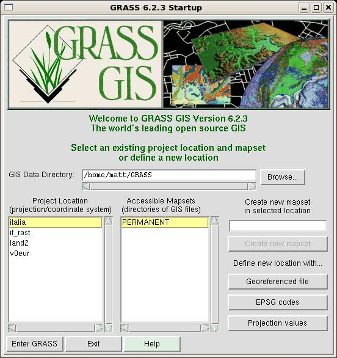From this window, one can read two important pieces of data:
- The database directory of the software (e.g., /home/matt/GRASS) where all the GIS data reside.
- The available locations in the database directory. In this case, there are 4 locations.
Besides choosing a defined location, it is also possible to create a new location in three different ways. These methods differ in the amounts of information required of the user. The simplest case occurs when data about the location are self-contained in the imported map (geo-referenced file); in these cases, no other information is needed.
The definition of a new location requires input (directly by the user or indirectly from a map) of the following information:
- the coordinate system for the location;
- the minimum and maximum coordinates of the area of interest; and
- the ground resolution.
These settings are critical for correct display and management of the location. Therefore, before going further, it's worthwhile to introduce some theoretical information about projections and coordinate systems.
1.4 Excursus: projections and coordinate systems
In a GIS, the information is stored with coordinates; therefore, a coordinate system has to be specified. For geographical data, the geographic system (the well known latitude and longitude) or a geodetic projection like Universal Transverse Mercator (UTM) or Gauss-Krüger are the usual choices.
The UTM coordinate system is a grid-based method of specifying locations on the surface of the Earth. It differs from the traditional method of latitude and longitude in several respects. The Gauss-Krüger system is similar to the UTM system with only small differences. More details on these coordinate systems can be found in further readings listed in the final section.
To optimize the projection from the geoid into a flat map, the Earth is approximated by an ellipsoid.
Different projections are used because each projection is particularly appropriate for certain uses or areas. For example, a projection that accurately represents the shapes of the continents will distort their relative sizes. GRASS offers predefined projections, as well as the geographic system and the possibility to define a geodetic projection by yourself. In this last case, the projection type, the ellipsoid and the datum (a reference from which measurements are made) for referencing the ellipsoid have to be specified.
1.5 Creating a location: the quest for data
The best way to appreciate the functionality of GRASS is to see it in action on a real case-study. As a first step, let us introduce the usual question that worries every new user: "Well, I have just installed this wonderful software, and I have some geo-referenced data to analyze and relate to geophysical characteristics of my research area. But what about geophysical maps? Where can I get them? What kinds of thematic data are available for my region of interest?"
The answer obviously depends on the analysis you have planned, and on the geographic region of interest. Some frequently desired thematic maps are:
- Elevation data
- Landsat data
- Land use data
- Climatological data
- State boundaries
Let us state clearly that, if you are interested in a very specific and very high resolution map, your only hope is to find this resource for a fee (usually substantially high) from a local agency. Sometimes, these data are distributed in electronic format; otherwise, you have to scan them from the hardcopy, yourself.
If you are instead interested in large-region medium resolution (30 - 100 m) maps, the Net hosts several amazing resources you should use. In the following section, we describe Net sources where this information is available for free download, and how to import them into GRASS.
2. Elevation data
The Shuttle Radar Topography Mission (SRTM) obtained elevation data on a near-global scale to generate the most complete high-resolution digital topographic database of Earth. SRTM consisted of a specially modified radar system flown onboard the Space Shuttle Endeavor during an 11-day mission in February of 2000. The SRTM data are available as 3 arc second (90m resolution). 1 arc second data are available for US. The Global Land Cover Facility provides free access to the data (http://glcfapp.umiacs.umd.edu:8080/esdi/).) The data contains "holes" where water or heavy shadow prevented the evaluation of elevation.
In the following example we show how to obtain elevation data for Tuscany (Central Italy), where we currently live.
Data gathering starts by connecting to the Global Land Cover Facility Web page. In the page, the three ways in which you can access the data (Map Search, Path/Row Search, Product Search) are displayed. Let us choose the first, Map search: the user must choose the desired product in the left panel and select the world region of interest (map on the right). Since we are interested in elevation data, we can choose one among the four available options. Note that GTOPO30 is a global digital elevation model with a horizontal grid spacing of 30 arc seconds, so about ten times less accurate than SRTM data. The first two options are different ways to access the SRTM dataset: the first one allows download of tiles of 1 degree square, while the second accesses WRS-2 tiles to approximate Landsat scenes, which we will introduce in the next paragraph. For reasons that will become clear, we choose to select this second option.
Now, we have to select the geographic region of interest, by clicking on the place panel, just above the world map. In the displayed text box type "Toscana, Italy" and press Enter. (In general, you type "Location, State".) You should then see a page similar to the one displayed in the figure.
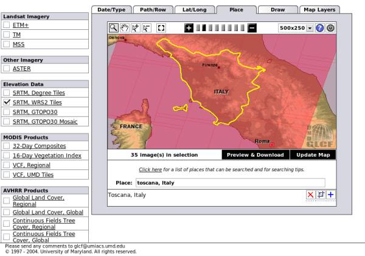There are 35 maps available in the selection. The next step is to select the ones of interest. Having pressed the button "Preview & Download", the selection window is displayed. It looks like the figure below:
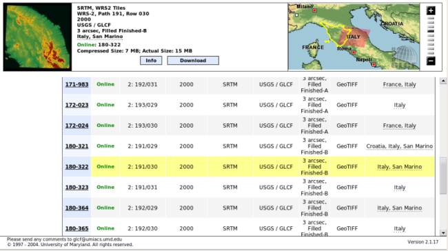The screen is divided into two zones. In the lower one available maps are listed, with their associated information. In particular, you can see the type of data (GeoTIFF format, a widely used raster format), the status (unfinished, unfilled, finished-a, and finished-b in ascending order of processing level and of our choice). In the third column, there are data which allow the identification of path/row attributes, used for Landsat satellite data. The user can select a map by clicking on its ID (first column). In the upper area, information about the selected map is shown. In the right part, the user can check which zone is covered by the map. This picture can guide the selection of really interesting maps. After identification of a desired map, the user should press the download button, and download the .tif.gz file from the window that will open.
At the end of the scan, you will find that only four maps are required for download: ID 180-332 (path/row: 191/030), ID 180-364 (192/029), ID 180-365 (192/030), and ID 180-408 (193/029). These files can be saved in a directory, e.g., $HOME/SRTM, and uncompressed.
2.1 Importing a raster map
GeoTIFF files incorporate information about the coordinate system, the projection, and the datum used for their georeferencing. In this way, it is possible to use them to define a new GRASS location, and subsequently import them into the software.
The process is a little tedious. From the start page of GRASS (displayed in the first figure of this article), define a new location by pressing the button "Georeferenced file". In the window that will open, insert the name of the new location (e.g., "tuscany"), and, in the last one, select the path to one of the four downloaded files (e.g., SRTM_ffB03_p192r029.tif). End the location definition by pressing "Define location". GRASS generates the tree for the new location, and displays a warning requesting to close the program.
At the restart, you will be able to see your first new generated location!
Select the location tuscany, and the mapset PERMANENT, then click on "Enter GRASS". The shell will display the following greeting message:
Welcome to GRASS 6.2.3 (2007) GRASS homepage: http://grass.itc.it/ This version running thru: TC Shell (/bin/tcsh) Help is available with the command: g.manual -i See the licence terms with: g.version -c If required, restart the graphical user interface with: gis.m & When ready to quit enter: exit Mapset <PERMANENT> in Location <tuscany> GRASS 6.2.3 >
Besides that, three more windows will open: the GUI (window GRASS
6.2.3 GIS Manager), the output window which will host the output of
all commands issued by means of GUI, and the map display window.
At this point, the Tuscany location is created, but it hosts no
data. Importation of the four downloaded maps can be performed either
by shell command or by GUI. We illustrate first this second approach,
since it will also show the shell command associated with the GUI
procedure.
From the GUI menu bar, select File / Import / Raster map / Multiple formats using GDAL. Fill in the form that will open, as in the following figure:

The only required fields are the name of input file and the output name, i.e., the internal name GRASS associates to this map. The box "Extend location extents based on new datasat" will extend the location to encompass the imported map.
In the window's last line, the shell command associated with the import operation gets displayed. Its structure is really simple, and makes it faster to import the other maps from the shell. At the shell prompt, insert these commands:
r.in.gdal -e input=/home/matt/SRTM/SRTM_ffB03_p192r030.tif output=192_030 r.in.gdal -e input=/home/matt/SRTM/SRTM_ffB03_p193r029.tif output=193_029
Unfortunately, trying to import the fourth map, you receive an error:
r.in.gdal -e input=/home/matt/SRTM/SRTM_ffB03_p191r030.tif output=191_030 ERROR: Projection of dataset does not appear to match current location.
What is happening? The answer is simple, as is the solution. The projection information associated with this map is different from the those of the three imported maps. The simpler solution is to import the map in a new location (say, "tuscany2"), which will be created ad-hoc, and then reproject the data in the current location. The first step is accomplished by adding a location parameter to r.in.gdal:
r.in.gdal -e input=/home/matt/SRTM/SRTM_ffB03_p191r030.tif output=191_030 location=tuscany2
Since a map's projection does not extend the region boundaries on the fly, you have to be certain that your region is large enough to contain the projected map. In this case, this is false, because the fourth map is partially outside the east boundary. You have to manually adjust this boundary with the command g.region (Config / Region / Change region settings from GUI), and then reproject (Raster / Develop map / Reproject raster from other location from GUI).
Which value has to be set as the east boundary? To make an educated guess, it is better to look at the coordinates of one of the imported maps. You can do it by setting the boundaries of the location to match one of the maps and then extrapolate where the fourth map will be located. For example:
g.region rast=192_029 g.region -p
The first command sets the location's boundaries to those of map 192_029. The second one queries all of the location's parameters; from its output, we can learn several things, such as coordinate system, projection, datum, and coordinates of the boundaries (Config / Region / Display region settings from GUI):
projection: 1 (UTM) zone: 32 datum: wgs84 ellipsoid: a=6378137 es=0.00669437999014138 north: 5065399.56462278 south: 4821139.56462278 west: 576236.63839707 east: 828866.63839707 nsres: 90 ewres: 90 rows: 2714 cols: 2807 cells: 7618198
In the output above, the measures are in meters. Now it is possible to set the eastern boundary:
g.region e=968866
And reproject the map in the current location:
r.proj input=191_030 location=tuscany2 output=191_030 method=nearest
The syntax of r.proj is self explanatory. The option method chose the interpolation algorithm to be used. (Note: if you set an incorrect east boundary, and you have to reproject the map, you must add the flag --overwrite at the end of command r.proj.)
2.2 Displaying and patching raster maps
It is time to see some output from GRASS! Let us display one of the imported maps, say, 192_029. This is done by using the GUI and pressing the "Add raster layer" button 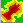.
A new empty raster layer is then added for visualization in the upper part of the GUI window. By clicking on the name of the layer, you cause the lower part of the window to display a form. Here, you can define which map is associated with the layer. Press on the Base map button, and select the map from the list that is then shown. At the end of the procedure, the GUI should look like this:
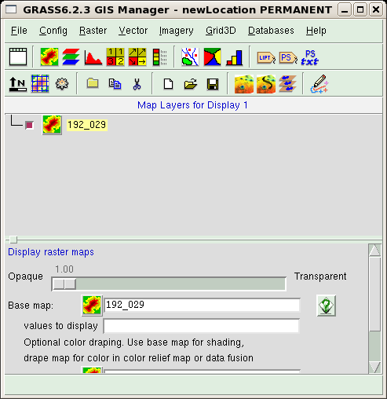You should now admire the results of your work. In the Map display
window, press the "Display active layer" button (the first one). The window
will probably remain empty. In this case, we have to set the zoom of the
displaying window to the one of the region boundaries (which we set in the
previous paragraph). You should press on the button "Zoom to..."  , and
select the option "Zoom to current region" as shown in the figure:
, and
select the option "Zoom to current region" as shown in the figure:
The displayed map should look almost red, with the exception of a few yellow areas, which correspond to the no-data zones. A useful instrument available from the Map Display window is the query button 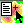. Select it and then press over the map; the value associated to the cell is shown in the output window. You will discover that, for example, no-data areas are represented by value -32768.
Now it's map-cleaning time! We have to patch the four maps to obtain a new composite map. Before that, we have to clean up the maps. In fact, GRASS expects that no data zones will be identified by a NULL value, while, as we know, SRTM maps identifies no-data areas with the code -32768. The following commands correct this problem (Raster / Develop map / Manage null values from GUI):
r.null map=191_030 setnull=-32768 r.null map=192_029 setnull=-32768 r.null map=192_030 setnull=-32768 r.null map=193_029 setnull=-32768
The next step is definition of the correct location boundaries. GRASS can make boundaries from a series of maps. We use this characteristic by issuing the command:
g.region rast=191_030,192_029,192_030,193_029
The resulting boundaries just encompass the four maps.
As our last step, we can merge the maps, and define an appropriate colormap:
r.patch in=191_030,192_029,192_030,193_029 output=elev r.colors map=elev rules=srtm
The command r.patch (Raster / Overlay maps / Patch maps from GUI) creates a new map, named elev, by merging the four existing ones, while r.colors (Raster / Manage map colors / Set colors to predefined color tables from GUI) defines a colormap using an appropriate predefined ruleset (srtm).
To correctly visualize the map, we have to restart GRASS after having closed the session by entering exit at the shell prompt, and closing the window manager. After having restarted the software, we can display the final result of our work: repeat the procedure used for displaying a raster layer and select the map elev. The map should look like this one:
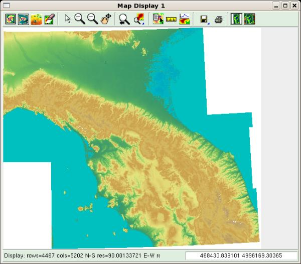If the result is satisfactory, you can delete the four small maps. From the GUI, the path is "File / Manage maps and volumes / Remove maps" and fill the raster field with the name of the maps to delete. From the shell, type:
g.remove rast=191_030,192_029,192_030,193_029
At the end of this section, we have created an elevation map for the Central Italy area. We will later extract from it the data related to the Tuscany region, and discard the rest.
As a final note, since the coverage of SRTM data is worldwide, the procedure can be repeated for any location.
3. Landsat data
Landsat-7 is a satellite launched on April 1999. It has sun-synchronous, near-polar orbit that allows it to record the surface of the Earth in a pattern of overlapping 185 km swaths, completing one scan every 233 orbits. The pattern is catalogued as a tiled global grid of 233 paths and 248 rows in the so called Worldwide Referencing System (WRS). We have seen an example of this reference system when downloading SRTM data.
The satellite is equipped with an instrument called the Enhanced Thematic Mapper (ETM+), a multi-spectral radiometric sensor. The sensor records eight bands of data with varying spectral and spatial resolutions (30 m spatial resolution for red, green, blue, near infrared, and two bands of medium infrared; 60 m for thermal infrared; and a 15 m panchromatic band). A list of the bands with their spanned wavelength (in micrometers) is given below:
- Blue-Green: 0.45-0.515 μm
- Green: 0.525-0.605 μm
- Red: 0.63-0.690 μm
- Near infrared: 0.760-0.900 μm
- Medium infrared: 1.550-1.750 μm
- Thermal: 10.40-12.5 μm
- Medium infrared: 2.080-2.35 μm
- Panchromatic: 0.52-0.92 μm
Landsat data are available from many sources. During April 2008, all data gathered by the satellite were released into the public domain, so it is possible to download scenes acquired in different months and different years. (See http://landsat.usgs.gov/products_data_at_no_charge.php for details.) We will show here a simpler method of download, limited at one dataset acquired in the years 2000-2001, available at the Global Land Cover Facility Web page. Data gathering procedure is identical to that described in the previous section. The user must select the right product by checking the ETM+ box in the interface shown in second figure of this document.
The result should be similar to the figure below:
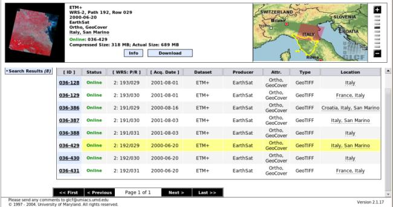The same path/row maps downloaded for elevation data are required; this correspondence greatly accelerates the user choice. In this case, the map IDs are: ID 036-387, ID 036-429, ID 036-430, and ID 036-128.
By pressing the download button, you can see that the data are available as a set of eight GeoTIFF files (one for each ETM+ band). They are much bigger than SRTM data, since the resolution is about three times as great. You can download whatever band you desire.
Landsat data can be used to assess the type, extent, and condition of vegetation over a region, or vegetative change over time. These studies require that a vegetative index be calculated from sets of remotely-sensed data. The most widely used index is the Normalized Difference Vegetative Index (NDVI). The NDVI is calculated as a ratio between measured reflectivity in the red and near-infrared portions of the electromagnetic spectrum. These two spectral bands are chosen because they are affected by the absorption of chlorophyll in leafy green vegetation and by the density of the green vegetation on the surface. Moreover, in red and near-infrared bands, the contrast between vegetation and soil is at a maximum.
ETM+ bands 3 and 4 provide red and near-infrared measurements, and therefore can be used to generate NDVI data sets with the following formula:
NDVI = (Band 4 - Band 3) / (Band 4 + Band 3)
The NDVI equation produces values in the range of -1.0 to 1.0. Vegetated areas will typically have values greater than zero, and negative values indicate non-vegetated surface features such as barren, water, ice, snow, or clouds. NDVI value are usually scaled for display, as is the following equation:
Scaled NDVI = 100 (NDVI + 1)
3.1 Making a raster map from existing ones
To evaluate the NDVI index for Tuscany, we have to download bands 3 and 4. These files can be saved in a directory, say, $HOME/Landsat, and uncompressed.
In order to preserve the projection values of Landsat data, the data can then be imported in a new location, e.g., landsat, in order to preserve the projection values of Landsat data. As shown in the preceding section, the command (dataset 193/29, band 4) is:
r.in.gdal -e input=/home/matt/GIS/Landsat/p193r029_7t20010801_z32_nn40.tif output=193_29_4 location=landsat
Restart GRASS, enter the new defined location, mapset PERMANENT, and finish the import:
r.in.gdal -e input=/home/matt/GIS/Landsat/p193r029_7t20010801_z32_nn30.tif output=193_29_3 r.in.gdal -e input=/home/matt/GIS/Landsat/p192r029_7t20000620_z32_nn40.tif output=192_29_4 r.in.gdal -e input=/home/matt/GIS/Landsat/p192r029_7t20000620_z32_nn30.tif output=192_29_3 r.in.gdal -e input=/home/matt/GIS/Landsat/p192r030_7t20000620_z32_nn40.tif output=192_30_4 r.in.gdal -e input=/home/matt/GIS/Landsat/p192r030_7t20000620_z32_nn30.tif output=192_30_3
As seen previously, map 191/30 has a different projection, so you have to read that map in a new location (one for each map), extend the region boundaries, and reproject the maps in the current location:
r.in.gdal -e input=/home/matt/GIS/Landsat/p191r030_7t20010803_z33_nn40.tif output=191_30_4 location=landsat2 r.in.gdal -e input=/home/matt/GIS/Landsat/p191r030_7t20010803_z33_nn30.tif output=191_30_3 location=landsat2b g.region e=968866 r.proj input=191_30_4 location=landsat2 output=191_30_4 method=nearest r.proj input=191_30_3 location=landsat2b output=191_30_3 method=nearest
As a last step, we can patch the maps together. Since, in this case, null values are represented by zeroes we can skip the r.null call by adding a -z flag to r.patch:
r.patch -z in=192_29_4,192_30_4,193_29_4,191_30_4 output=Landsat_B4 r.patch -z in=192_29_3,192_30_3,193_29_3,191_30_3 output=Landsat_B3
Now, all the elements for NDVI calculation are on hand. It is time to learn how to make a new map starting from existing ones!
The best approach is to use the shell command r.mapcalc:
r.mapcalc "NDVI=(float(Landsat_B4 - Landsat_B3) / (Landsat_B4 + Landsat_B3) + 1)*100"
To obtain a floating point division (the Landsat maps are integer maps), the float function is required. The command makes a new map, called NDVI, by operating, cell by cell, on the values in maps Landsat_B3 and Landsat_B4.
Finally, you should reproject the NDVI map into the tuscany location. To do that, exit from GRASS session, restart the program, and login into the tuscany location. Then issue the command:
r.proj input=NDVI location=landsat output=NDVI
If no problem arises, you will have two raster maps in this location. To recover disk space, all other locations can be erased. This can be done by exiting GRASS, changing directory to $HOME/GRASS, and deleting the directories tuscany2, landsat, landsat2, and landsat2b. The resulting map will be shown in the next section, once having learned how to "mask" it in order to show only the pixels of Tuscany.
As for SRTM data, Landsat data also is worldwide, so you can repeat the procedure for any location on the Earth.
4. Getting state and districts' boundaries
States', districts' and municipalities' boundaries can be retrieved from several sources, depending on the region of interest. In the case of Italian regions, for example, these are available from the ISTAT Web site (in Italian). The file of interest (regioni) can be downloaded from the right panel. This file contains Italy's regional boundaries.
4.1 Managing a vector map
Download the file into a new directory, e.g., $HOME/IT, then unzip it. The content of the archive consists of several files, one of which is a .shp file, a widely used vector type of data.
To read this type of data into GRASS, proceed in this way. Start GRASS in the tuscany location, then issue the command (File / Import / Vector map / Various formats using OGR from GUI):
v.in.ogr -e dsn=/home/matt/IT/reg2001_s.shp output=reg_boundaries min_area=0.0001 snap=-1 location=italy_reg
The import requires the specification of a datum transformation parameter. At the prompt, you can select parameter 8, valid for whole European area. At the end, you will have a new location, named italy_reg, which will contain a vector map named reg_boundaries.
Now, logout from the GRASS session and restart in the newly created location. The acquired vector map contains political boundaries of all the Italian regions. For our example, only the Tuscany region is of interest, so we have to extract an element from a map. For a vector map, this is a quite simple operation, since it is equivalent to extracting records from a database through a query.
To do the extraction, we should first learn how to inspect the database associated with a vector map. This can be easily done in the GUI. Vector layers are added to the display layer, in a fashion similar to the raster layers. The only change is that users have to press the "Add vector layer" button 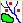.
Select the added layer in the top part of the GUI window. In the bottom part, which will become available, choose the vector map you want to display, using the "Vector map" text field or the corresponding button. There are many more options for vector maps than for raster maps. For now, we are interested in the two buttons located at the end of the list. Scroll down the window, and you should see the buttons "show attribute columns" and "show attribute data".
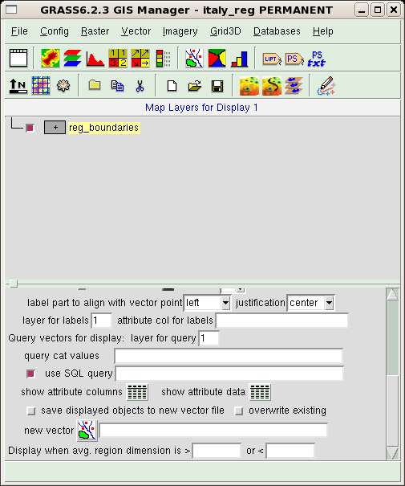These buttons access the database linked to the map and return, respectively, the names of the database columns and the contents of the whole database, as shown in the next figure where these outputs are displayed. Note that each output is prefaced by the command forwarded from the GUI to the shell interpreter.
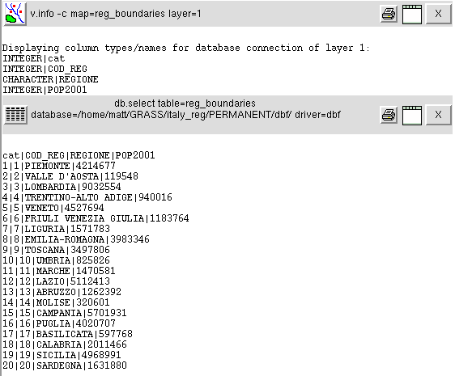The database contains four columns: a key used to index the table, the code of the regions, their names and their populations as recorded in 2001. The region code could be used for extraction of Tuscany. You can do that typing the command:
v.extract in=reg_boundaries out=tuscany_boundaries new=-1 where="COD_REG=9"
The map tuscany_boundaries will be created. The option new=-1 preserves the database table, exporting it in the new map.
4.2 Vector to raster conversion
Before exiting and connecting again in the tuscany location, we'll demonstrate how to convert a vector map to a raster one. This step will create a silhouette of the Tuscany region, which will later help us to "cut" the map of elevation and NDVI to the required extent. The resolution of the vector map is much lower than the one of the tuscany location (check it yourself: g.region -p). So, we increase the resolution and then convert the vector map:
g.region nsres=90 g.region ewres=90 v.to.rast input=tuscany_boundaries output=MASK use=val
This command makes the map MASK (a reserved map name), assigning to all cells the same value (option use=val). When a raster map named MASK exists in a location, most raster operations (on any raster map) will take place only in the grid cells specified by the MASK.
Now, restart GRASS, and access the tuscany location. Then, reproject the vector and the raster maps from italy_reg:
v.proj input=tuscany_boundaries location=italy_reg output=tuscany_boundaries r.proj input=MASK location=italy_reg output=MASK
If we try to display the elev raster map, as we did before, the result is different. The elev map is masked, and only cells from Tuscany will be shown. The same behaviour occurs for NDVI map. The two maps are shown in the following figure (NDVI on the left, elevation on the right).
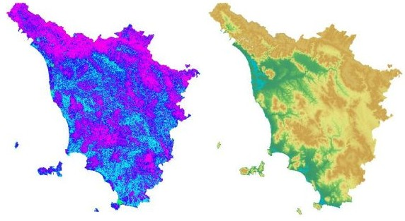5. Land cover map
Land cover data are available from different sources, depending on the region of your interest. For European countries, you can refer to Corine Land Cover (CLC). CLC is a map of the European environmental landscape based on interpretation of satellite images; it provides comparable digital maps of land cover for each country for much of Europe, and includes 47 classes of land cover. Data on land cover is necessary for environmental policy, regional development, and agriculture policies.
Corine Land Cover 2000 data can be downloaded at 100 m horizontal resolution in raster format (GeoTIFF) from the European Environmental Agency Web site (http://dataservice.eea.europa.eu/dataservice/metadetails.asp?id=1007). Users are required to complete the "Agreement form for Corine Land Cover 2000", which is shown before download. In this way, you can download the whole European area contained in the file lceugr100_00EEA17938I.zip (approx 66MB). The download page is shown in the following figure. In the same page, you will find the file (four formats are available) containing the legend for interpretation of the map.
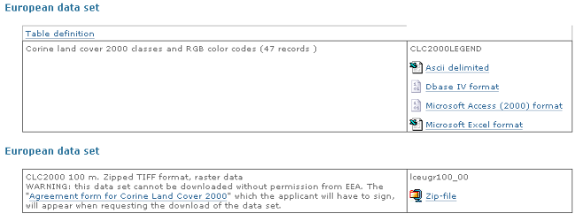There is also the possibility of downloading data in vector format (shapefile .shp), selecting on a grid only the region of interest (see http://www.eea.europa.eu/themes/landuse/clc-download).
After having downloaded the file into a directory, e.g., $HOME/CLC, uncompress it; the files will be expanded in a subdirectory named lceugr100_00. Then start GRASS in the tuscany location and import the data into the new location (e.g., CLC):
r.in.gdal -e input=/home/matt/CLC/lceugr100_00/lceugr100_00_pct.tif output=CLC location=CLC
CLC data can be reprojected in the current location:
r.proj input=CLC location=CLC output=CLC method=nearest
The new raster map can be displayed as shown before. The result is in the following figure; the presence of the raster MASK will cut the map at the desired boundaries.
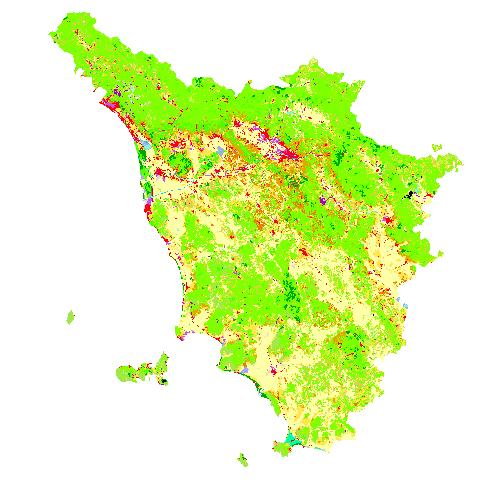The various areas are depicted in different colors. The legend for interpretation of the map can be found in the file $HOME/CLC/lceugr100_00/clc_legend.xls. From this file you can see that, for example, CLC code 111 represents Artificial surfaces/Urban fabric/Continuous urban fabric and is depicted in RGB color 230-0-77, while code 221 is Agricultural areas/Permanent crops/Vineyards, and its RGB color is 230-128-0.
After a successful import of the map, you can recover a lot of disk space by erasing the location CLC. This is done by exiting GRASS and deleting the directory $HOME/GRASS/CLC.
5.1 Land cover map of US
When the research area is within the USA, the user can refer to the National Land Cover Database (NLCD 2001). It is an update of NLCD 1992, and includes 21 classes of land cover at 30 m cell resolution. The 76 standard NLCD mapping zones have been grouped into 15 larger zonal areas for easier distribution and download. The download site address is http://www.mrlc.gov/nlcd_multizone_map.php.
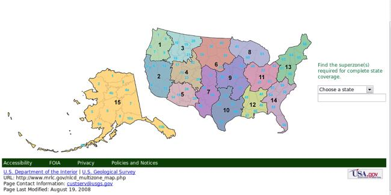This page also contains a link to a zipped shapefile (3 MB) with the standard NLCD zones as well as a multizone attribute. Download it into $HOME/US directory, and unzip its content: a subdirectory named landcover_bndry_030607_shp will be created in the process. There, along with several other files, you'll find the landcover_bndry_030607.shp shapefile, which we'll later import into a new location.
The next step is to download the landcover for the zone of interest: you have the option to download data for a state or a superzone. As an example, let us choose the data for superzone 13 by clicking on it over the displayed US map. In the page that will open, select the link Land Cover zip file, and save the associated file area_13_landcover.zip (130 MB) in the directory $HOME/US, then unzip its content. Among other files, you will see the raster file landcover13_3k_022007.img, which we are going to import into GRASS.
After restarting GRASS in the tuscany location, we can import the superzone 13 raster data into a new location, i.e., USA:
r.in.gdal -e input=/home/matt/US/landcover13_3k_022007.img output=area13 location=USA
The import requires specifying the datum transformation parameter. At the prompt, you can select parameter 6, valid for whole North American region.
Exit GRASS, and restart in the USA location. Then, import the shapefile containing the states' boundaries, and extend the location boundaries to match the ones of the vector map:
v.in.ogr -o dsn=/home/matt/US/landcover_bndry_030607.shp output=boundaries min_area=0.0001 snap=-1 g.region vect=boundaries
Finally, we can display the resulting map, superimposing the vector layer to the raster one. To do that, in the GUI, you can start by adding a raster layer for visualization and selecting the raster map area13. Then, add a vector layer and select map boundaries. Using the vector layer, you can display a variety of objects: points, lines, centroids, and areas. To display only the boundary lines, deselect checkbox centroids and areas, as in the figure below.
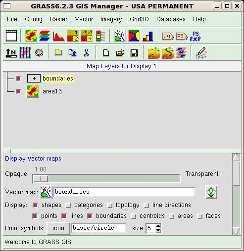Then, activate the Map Display window, and press the display button. The zoomed result should look like this:
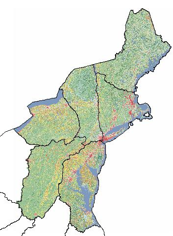The described procedure could be adapted to other locations over the planet. A useful reference for landcover data is http://landcover.usgs.gov/landcoverdata.php.
6. Climatological data
Climatological data open a entirely new way of searching for information. Whereas elevation data can be considered static (i.e., their value does not change with time), and Landsat and land use data evolve slowly in time (in fact, you can find research papers comparing the Landsat situation in various decades to trace the global climate evolution), climatological data change rapidly. So, the first question you have to ask yourself is: "What type of data am I searching for?" You might be interested in daily or even hourly measurements, or in monthly means, or even in seasonal or yearly means. Moreover, yearly and seasonal means can be evaluated over a long period (say, 15 years) to smooth out the fluctuations introduced by a very hot summer or by a very cold winter.
The second aspect to be considered is the format in which data are distributed. The measurements are usually provided in tabular format: the tables contain the values recorded by a set of meteorological stations distributed over the region of interest. The main variables recorded are temperature (minimum, maximum, mean), humidity, and rainfall. Values in places without meteorological stations can be obtained by the user by mean of interpolation techniques. This is a difficult process, and requires a deeper analysis, because it involves either data manipulation (e.g., transformation of daily data in the tables to obtain a seasonal mean; selection of the interesting stations, etc.) or interpolation with advanced statistical techniques (e.g. universal kriging interpolation.) This last step can be performed by, for example, interfacing GRASS with R, a statistical program which we briefly described in issue 138 of the Linux Gazette.
Since a detailed description of all these depicted procedures would be long and complex, we'll postpone it until another article.
Moving further
In this long excursus, we have introduced some basic features of the software, but have neglected almost completely to describe the way in which data could be analyzed and related to each other. This approach is motivated by our experience with GRASS. In fact, when we started using this software, we realized that there are many good tutorials and manuals describing in great detail all the operations possible with the software - but we had a great deal of difficulty in finding and acquiring thematic maps, either because the tutorials are usually focused on a standard dataset (provided as an example of location data with GRASS) or because the information we needed was scattered all over the Net. It is our hope that the present document will contribute to filling this gap.
While waiting for our next article, readers seriously interested in the software can start by browsing the documentation pages available at the GRASS Web site, which also hosts some documents in non-English languages. We recommend the following documents:
- Introduction to GRASS GIS software. http://grass.osgeo.org/gdp/neteler/index.html
- An introduction to the practical use of the Free Geographical Information System GRASS 6.0. http://www.gdf-hannover.de/lit_html/grass60_v1.2_en/index.html (HTML), http://www.gdf-hannover.de/dl.php?download=gdf_grass60_v1.2_en.pdf (PDF)
- GRASS 6 in a nutshell. http://mpa.itc.it/markus/osg05/
Other resources available on the net can be useful:
- Geographic Information System. http://en.wikipedia.org/wiki/Geographic_information_system
- GIS file formats. http://en.wikipedia.org/wiki/GIS_file_formats
- Description of possible projections. http://en.wikipedia.org/wiki/Map_projection
- Universal Transverse Mercator coordinate system. http://en.wikipedia.org/wiki/Universal_Transverse_Mercator_coordinate_system
- Gauss-Krüger coordinate system. http://en.wikipedia.org/wiki/Gauss-Krüger_coordinate_system
- Geographic Information Systems. http://erg.usgs.gov/isb/pubs/gis_poster/
Talkback: Discuss this article with The Answer Gang
Matteo Dell'Omodarme
![[BIO]](../gx/2002/note.png)
I am a physicist involved with Linux since 1994, when I acted as system and security manager at the Department of Astronomy, University of Pisa (Italy). My current research interests are mainly in Applied Statistics, but I also work as system manager, net manager, web developer and programmer (C, C++, FORTRAN, Php, Tcl/Tk).
Giada Valle
I am an astrophysicist mainly interested in galactic evolution; in this subject I develop simulation codes in C/C++ and FORTRAN. I've been using Linux since 1998, when I worked on my degree thesis at the University of Pisa (Italy).